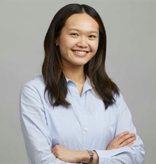
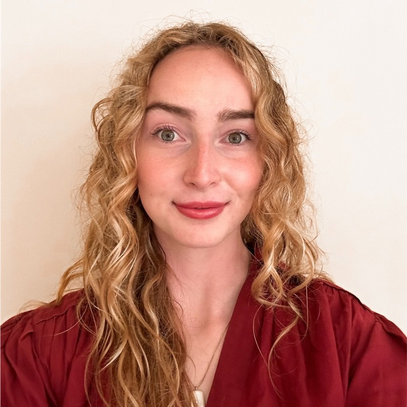

Careers in data science
Panel discussion session
There will be a panel discussion on Careers in data science on Sunday, 6th April from 5 to 6:30 pm at Guild Lounge.
Meet our panelists—from history majors to engineers, young professionals to seasoned experts—each with a unique career path in data science. Listen to the stories of five unique journeys into data science. Ask them what inspired their path—or if their path chose them?
Sanchit Tiwari
Associate Partner at McKinsey & Company I Senior Principal at QuantumBlack, AI by McKinsey
Sanchit Tiwari is a recognized AI & Data Science leader with extensive experience in Data-Centric AI, Digital Twin, GenAI, and scalable AI solution architecture. As an Associate Partners at McKinsey & Company and Senior Principal at QuantumBlack, AI by Mckinsey, Sanchit has led large scale AI driven transformation across the globe with multiple organizations. With two decades of experience, Sanchit specializes in leveraging advancement in AI and GenAI to optimize operations and business strategy. He has developed expertise in AI-powered Digital Twins and implementing AI driven automation to drive measurable business impact. Beyond his industry work, Sanchit is passionate thought leader, speaker, and mentor in the field of AI. He actively shares insights on Data Science and future of AI in enterprise. He is deeply committed bridging the gap between data science & AI research and real work applications, helping business scale data science solutions effectively. His academic foundation in computer science combined with his deep industry expertise enables him to blend Data Science research with practical business applications to create transformative solutions.

Daniela Hurtado Lange
Assistant Professor, Kellogg School of Management, Northwestern University
Daniela received her Ph.D. in Operations Research at Georgia Tech in December 2021, a Master of Science in Industrial Engineering and an undergraduate degree in Industrial Engineering and Math Engineering at Pontificia Universidad Católica the Chile. Before joining Kellogg, she spent 1.5 years as an Assistant professor of Mathematics at William & Mary. Her research interests focus on performance analysis of Stochastic Processing Networks and applied probability, which are fundamental in data science for optimizing complex systems, modeling uncertainty, and improving decision-making in areas such as machine learning, operations research, and large-scale data processing.
Kevin Rak
Data Specialist at Strengthening Chicago’s Youth, a program of Lurie Children’s Hospital
Kevin Rak is a Program Specialist (Data) with Strengthening Chicago’s Youth, a program of Lurie Children’s Hospital that connects, collaborates, and mobilizes around a public health approach to violence prevention. He has several years’ experience working in community-based organizations on a variety of issues, including homeless services, support for domestic violence survivors, and violence prevention. Kevin has analyzed and presented data to make it useful to residents, community organizations, researchers, and funders. He has contributed to research that has been published in peer-reviewed journals and shared with policy makers. Kevin holds a Bachelor’s in History from Northwestern University and a Master’s in Public Policy from King’s College London.

Tina Zheng
Data Science Manager, Ventas REIT
Tina Zheng is a Data Science Manager at Ventas, a leading real estate investment trust in the healthcare sector. She specializes in translating complex data into actionable insights that support strategic decisions around acquisitions, dispositions, and portfolio performance. At the intersection of research, analytics, and machine learning, Tina’s work drives the development of visualization tools and data-driven presentations that inform executive decision-making and enhance operational outcomes. She graduated from Northwestern University in 2019 with a double major in Economics and Music (Violin).

Lila Wells
Business analyst, McKinsey & Company
Lila graduated from Northwestern University in 2023 with a major in Sociology, a minor in Data Science, and a certificate in Human-Computer Interaction. At McKinsey, she does most of her work in operations, where she primarily works with large datasets in Excel, often dealing with raw data that requires extensive cleaning, wrangling, and analysis to extract meaningful insights. Her first role after graduation was as a Program Manager at Amazon Web Services (AWS), where where she was involved in business and product operations for cloud computing services. Lila worked with large datasets and self-taught JavaScript to streamline web-based analytics tasks.
Zichen (Victoria) Shi
First-year data science PhD student at University of Chicago
Victoria Shi is a first-year Data Science Ph.D. student at the University of Chicago. She graduated from Northwestern University in 2024 with a triple major in Industrial Engineering, Data Science, and Statistics, plus a minor in Economics. Victoria decided to pursue a Ph.D. after her sophomore internship at Goldman Sachs, where she worked as a quant strat, constructing a robust data pipeline for a knowledge graph for data-driven investment. Currently, she draws on insights from machine learning, optimization, and inference to develop a unified theoretical framework for risk-aware decision-making—a theme inspired by her undergraduate honors thesis in Statistics with Professor Thomas Severini on stochastic dominance and its implications for portfolio selection under uncertainty. During her undergraduate studies, Victoria managed her jam-packed academic load in just three years while still finding time to climb and chase new adventures. She enjoys playing tennis, rock climbing, and tinkering.
Networking with Capital One
Interested in connecting with Capital One? Capital one is the ninth largest bank in the United States by total assets as of 31st December 2024, the third largest issuer of Visa and Mastercard credit cards, and one of the largest car finance companies in the United States.
Capital One will be on campus Saturday, April 5th. During this time Capital One will be:
hosting a resume review session
discussing the Day in the Life of a Capital One associate, and
talking about other networking opportunities
Be sure to attend to connect with Capital One and learn more about upcoming career opportunities!